- កំណត់សញ្ញាណប្លង់និងផែនទីបានច្បាស់លាស់
- គូសគំនូសតាងមាត្រដ្ឋានបានត្រឹមត្រូវ
- ដោះស្រាយចំណោទមាត្រដ្ឋានបានត្រឹមត្រូវ ។
1. ផែនទីនិងប្លង់
សញ្ញាណទូទៅ ៖ នៅលើក្រដាសមួយសន្លឹកគេមិនអាចតាងទំហំពិតនៃប្រទេសមួយបានទេ គេត្រូវគូសគំនូសមួយតូចជាង ។ រូបដែលគូសនៅលើក្រដាសត្រូវឱ្យដូចរូបពិត បានសេចក្តីថា រូបទាំងពីរមានផ្ទៃក្រឡាខុសគ្នាតែមានរាងដូចគ្នា ។
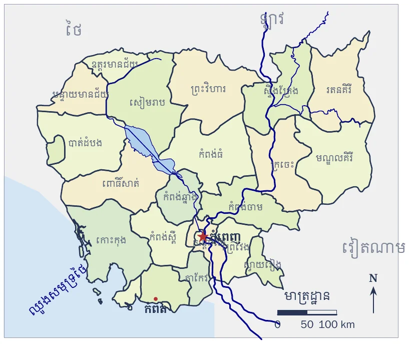
គេបានលទ្ធផលនេះដោយគូសបង្រួមវិមាត្រនៃប្រទេសក្នុងសមាមាត្រដដែល ។ គំនូសតាងបែបនេះហៅថា ប្លង់ ឬ ផែនទី ។
ឧទាហរណ៍ ៖ គេមានពហុកោណ \(\displaystyle A'B'C'D'E'\) ដែលពង្រីកពីពហុកោណ \(\displaystyle ABCDE\) ។ គេថា ពហុកោណទាំងពីរដូចគ្នា ។
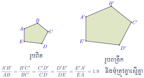
យើងសង្កេតឃើញថា ៖
- ចម្ងាយវាស់លើរូបមួយសមាមាត្រនិងចម្ងាយត្រូវគ្នាលើរូបមួយទៀត
- មុំត្រូវគ្នាលើរូបទាំងពីរមានរង្វាស់ស្មើគ្នា ។
គេមានរូបថតវិមានឯករាជ្យពីរសន្លឹកដែលរូប B បានចម្លងចេញពីរូប A ។ បើគេវាស់កម្ពស់រូបថតទាំងពីរ គេបាន \(\displaystyle 26\text{ mm}\) ចំពោះរូប A និង \(\displaystyle 39\text{ mm}\) ចំពោះរូប B ។ តែបើគេវាស់ទទឹងរូបថតទាំងពីរ គេបាន \(\displaystyle 6\text{ mm}\) ចំពោះរូប A និង \(\displaystyle 9\text{ mm}\) ចំពោះរូប B ។ ចូរអ្នកសរសេរផលធៀបកម្ពស់និងផលធៀបទទឹងនៃរូបថតទាំងពីរ ។ តើអ្នកសង្កេតឃើញយ៉ាងដូចម្តេច ចំពោះផលធៀបទាំងពីរនេះ?
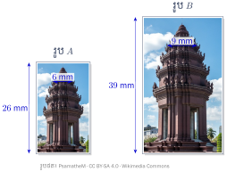
- ផលធៀបកម្ពស់រូបថត ៖
កម្ពស់រូប \(\displaystyle A = 26\text{ mm}\) និងកម្ពស់រូប \(\displaystyle B = 39\text{ mm}\)
យើងបាន \(\displaystyle \frac{26}{39} = \frac{2}{3}\) ។ - ផលធៀបទទឹងរូបថត ៖
ទទឹងរូប \(\displaystyle A = 6\text{ mm}\) និងទទឹងរូប \(\displaystyle B = 9\text{ mm}\)
គេបាន \(\displaystyle \frac{6}{9} = \frac{2}{3}\) ។
យើងសង្កេតឃើញថាផលធៀបទាំងពីរស្មើគ្នា ។ ម្យ៉ាងទៀតបើយើងរកផលធៀបរវាងចម្ងាយត្រូវគ្នា នោះយើងសង្កេតឃើញថា ផលធៀបមានតម្លៃថេរគឺ \(\displaystyle \frac{2}{3}\) ។
សុខា យករូបថតមួយសន្លឹកមានទំហំ \(\displaystyle 4\text{ cm} \times 6\text{ cm}\) មកផ្តិតពង្រីកទៅជាទំហំ \(\displaystyle 16\text{ cm} \times 24\text{ cm}\) ។ ចូរអ្នកសរសេរផលធៀបរូបថតទាំងពីរ ។ តើអ្នកសង្កេតឃើញយ៉ាងដូចម្តេច ចំពោះរូបថតទាំងពីរសន្លឹកនេះ?
ចម្លើយ ៖ ផលធៀប \(\displaystyle \frac{1}{4}\) ។
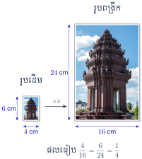
2. មាត្រដ្ឋាន
ឧទាហរណ៍ 1 ៖ បើប្រវែង \(\displaystyle 1\text{ cm}\) នៅលើផែនទី តាងឱ្យប្រវែង \(\displaystyle 1\,000\text{ cm}\) ពិតនៅលើផ្ទៃដី នោះគេថាផែនទីនេះមានមាត្រដ្ឋាន \(\displaystyle \frac{1}{1\,000}\) ឬ \(\displaystyle 1/1\,000\) ។
ឧទាហរណ៍ 2 ៖ បើប្រវែង \(\displaystyle 1\text{ cm}\) នៅលើផែនទី តាងឱ្យប្រវែង \(\displaystyle 10\,000\text{ cm}\) ពិតនៅលើផ្ទៃដី នោះគេថាផែនទីនេះមានមាត្រដ្ឋាន \(\displaystyle \frac{1}{10\,000}\) ឬ \(\displaystyle 1/10\,000\) ។
សម្គាល់ ៖ ផែនទីគេនិយមប្រើ មានមាត្រដ្ឋាន \(\displaystyle 1/50\,000\) ឬ \(\displaystyle 1/20\,000\) ។ ផែនទីក្រុមសូរិយោដី គេក្រិតមាត្រដ្ឋាន \(\displaystyle 1/20\,000\) ។
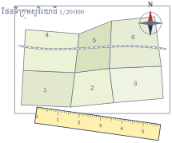
នៅពេលរថភ្លើងធ្វើដំណើរ គេបានឃើញផែនទីផ្លូវមួយខ្សែដែលកំពុងជួសជុលមានចម្ងាយ \(\displaystyle 150\text{ mm}\) នៅលើផែនទីដែលមានមាត្រដ្ឋាន \(\displaystyle 1/80\,000\) ។ តើចម្ងាយផ្លូវដែលកំពុងជួសជុលនោះមានប្រវែងប៉ុន្មានគីឡូម៉ែត្រ ?
ចម្ងាយ \(\displaystyle 1\text{ mm}\) នៅលើផែនទីស្មើនឹង \(\displaystyle 80\,000\text{ mm}\) ឬ \(\displaystyle 80\text{ m}\) នៅលើផ្ទៃដី
ចម្ងាយ \(\displaystyle 150\text{ mm}\) នៅលើផែនទីស្មើនឹង \(\displaystyle 80\text{ m} \times 150 = 12\,000\text{ m}\) នៅលើផ្ទៃដី
ដូច្ចោះចម្ងាយផ្លូវដែលកំពុងជួសជុលគឺ \(\displaystyle 12\,000\text{ m}\) ឬ \(\displaystyle 12\text{ km}\) ។
ផ្លូវជាតិពីភ្នំពេញទៅស្ទឹងត្រែងមានប្រវែងពិត \(\displaystyle 455\text{ km}\) តាមផ្លូវជាតិលេខ 6A លេខ 7 និងលេខ 13 ។ តើនៅលើផែនទីដែលមានមាត្រដ្ឋាន \(\displaystyle 1/200\,000\) មានចម្ងាយប៉ុន្មាន ?
ចម្ងាយ \(\displaystyle 200\,000\text{ cm}\) ឬ \(\displaystyle 2\text{ km}\) នៅលើផ្ទៃដីស្មើនឹងចម្ងាយ \(\displaystyle 1\text{ cm}\) នៅលើផែនទី
ចម្ងាយ \(\displaystyle 455\text{ km}\) នៅលើផ្ទៃដីស្មើនឹង \(\displaystyle 455 \div 2 = 227.5\text{ cm}\) នៅលើផែនទី
ដូច្ចោះចម្ងាយនៅលើផែនទីគឺ \(\displaystyle 227.5\text{ cm}\) ។
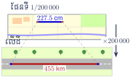
ប្លង់ដែនទីស្វ័យមេធីនៃបណ្តោយទ្វារអគារមួយ មានប្រវែង \(\displaystyle 3.5\text{ cm}\) បើបណ្តោយពិតមានប្រវែង \(\displaystyle 70\text{ m}\) ។ តើដែនទីនោះមានមាត្រដ្ឋានប៉ុន្មាន ?
ចម្លើយ ៖ \(\displaystyle \frac{1}{2\,000}\) ។
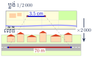
3. កំណត់មាត្រដ្ឋាន
គេតាងផែនទីដោយប្រភាគមួយដែលភាគយកជាប្រវែងនៅលើផែនទី ឯភាគបែងជាប្រវែងពិតនៃវត្ថុ ហើយប្រវែងទាំងពីរនេះត្រូវគិតជាខ្នាតដូចគ្នា ។
ឧទាហរណ៍ ៖ មាត្រដ្ឋាន \(\displaystyle \frac{1\text{ cm}}{1\,000\text{ cm}}\) មានន័យថា \(\displaystyle 1\text{ cm}\) លើផែនទីស្មើនឹង \(\displaystyle 1\,000\text{ cm}\) លើដី ។
បើផែនទីមួយមានមាត្រដ្ឋាន \(\displaystyle \frac{1}{1\,000}\) នោះគេបាន ៖
- \(\displaystyle 1\text{ mm}\) លើផែនទី ត្រូវនឹង \(\displaystyle 1\,000\text{ mm}\) លើដី
- \(\displaystyle 1\text{ cm}\) លើផែនទី ត្រូវនឹង \(\displaystyle 1\,000\text{ cm}\) លើដី
- \(\displaystyle 1\text{ dm}\) លើផែនទី ត្រូវនឹង \(\displaystyle 1\,000\text{ dm}\) លើដី ។
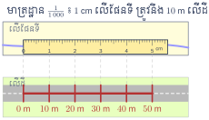
សម្គាល់ ៖ វិមាត្រទាំងឡាយនៃរូបនៅលើផែនទី ត្រូវតែនឹងមួយចំនួនដូចគ្នា ។ ចំពោះផែនទីមួយ បើវិមាត្រចែកនឹង \(\displaystyle 100\,000\) នោះគេថាផែនទីមានមាត្រដ្ឋាន \(\displaystyle \frac{1}{100\,000}\) ឬ \(\displaystyle 1/100\,000\) ។
មាត្រដ្ឋានមួយតាងឱ្យចម្ងាយពិតនៅលើដី \(\displaystyle \frac{1}{2\,500}\) ។ រកចម្ងាយពិតនៅលើដី ។
មាត្រដ្ឋាន \(\displaystyle \frac{1}{2\,500}\) មានន័យថា \(\displaystyle 1\text{ cm}\) លើផែនទីត្រូវនឹង \(\displaystyle 2\,500\text{ cm}\) លើដី ឬ \(\displaystyle 25\text{ m}\)
ដូច្ចោះចម្ងាយពិតនៅលើដីគឺ \(\displaystyle 25\text{ m}\) ។
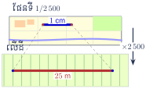
គ្រូណែនាំឱ្យសិស្សសង្កេតមើលផែនទីនៅក្នុងថ្នាក់រៀន ។ បន្ទាប់មកយកបន្ទាត់ក្រិតមកវាស់ប្រវែងទីតាំងសំខាន់ៗ រួចឱ្យសិស្សគណនាប្រវែងពិតនៅលើផ្ទៃដី ។
4. ចំណោទ
ឧទាហរណ៍ ៖ ផែនទីនៃប្រទេសកម្ពុជាមានមាត្រដ្ឋាន \(\displaystyle \frac{1}{500\,000}\) ។ បន្ទាត់ត្រង់តាងប្រវែងពីរាជធានីភ្នំពេញទៅទីរួមខេត្តកំពតមានប្រវែង \(\displaystyle 27\text{ cm}\) ។ រកចម្ងាយពិតនៅលើដី ។
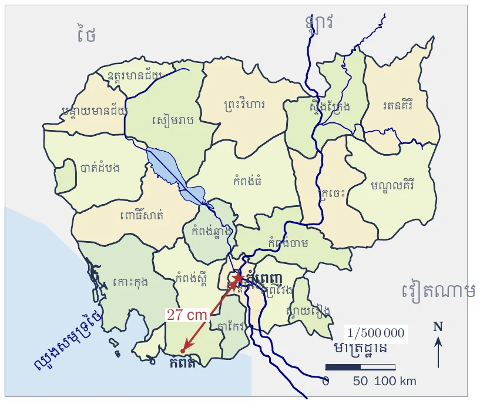
មាត្រដ្ឋាន \(\displaystyle \frac{1}{500\,000}\) មានចម្ងាយពិត \(\displaystyle 500\,000\) ដង ធំជាងប្រវែងនៅលើផែនទី ។ ចម្ងាយពីរាជធានីភ្នំពេញទៅទីរួមខេត្តកំពតតាមបន្ទាត់ត្រង់មាន ៖
ដូច្ចោះចម្ងាយពីរាជធានីភ្នំពេញទៅទីរួមខេត្តកំពតតាមបន្ទាត់ត្រង់គឺ \(\displaystyle 135\text{ km}\) ។
រកចម្ងាយនៅលើផែនទីភូមិបាលមួយ ដោយដឹងថាផែនទីនោះមានមាត្រដ្ឋាន \(\displaystyle \frac{1}{2\,500}\) បើភូមិទាំងពីរនៅលើដីឃ្លាតឆ្ងាយពីគ្នា \(\displaystyle 1\,500\text{ m}\) ។
ភូមិទាំងពីរមានចម្ងាយនៅលើផែនទីគឺ ៖
ដូច្ចោះចម្ងាយនៅលើផែនទីគឺ \(\displaystyle 60\text{ cm}\) ។
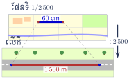
វិមានឯករាជ្យមានកម្ពស់ពិត \(\displaystyle 37\text{ m}\) បើគេវាស់ក្នុងប្លង់នៃផែនទីមួយវាមានកម្ពស់ \(\displaystyle 18.50\text{ cm}\) ។ តើប្លង់នៃផែនទីមានមាត្រដ្ឋានប៉ុន្មាន ?
កម្ពស់ក្នុងប្លង់ \(\displaystyle 18.50\text{ cm} = 0.185\text{ m}\)
មាត្រដ្ឋាននៃប្លង់នោះគឺ ៖
ដូច្ចោះ មាត្រដ្ឋាននៃប្លង់នោះគឺ \(\displaystyle \frac{1}{200}\) ។
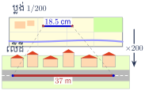
ទីក្រុងពីរមានចម្ងាយពិត \(\displaystyle 225\text{ km}\) ។ តើចម្ងាយនេះតាងឱ្យប្រវែងប៉ុន្មាននៅលើផែនទី បើគេយកមាត្រដ្ឋាន ៖
- ក. \(\displaystyle \frac{1}{50\,000}\)
- ខ. \(\displaystyle \frac{1}{80\,000}\)
- គ. \(\displaystyle 1/20\,000\)
- ឃ. \(\displaystyle 1/100\,000\)
- ង. ចំពោះមាត្រដ្ឋានខាងលើ តើអ្នកជ្រើសរើសយកមួយណា ដើម្បីគូសផែនទីផ្លូវថ្នល់ឱ្យមានវិមាត្រសមរម្យ ។
ចម្លើយ ៖ \(\displaystyle 225\text{ km} = 22\,500\,000\text{ cm}\) ដូច្នេះ
- ក. \(\displaystyle \frac{22\,500\,000}{50\,000} = 450\text{ cm}\)
- ខ. \(\displaystyle \frac{22\,500\,000}{80\,000} = 281.25\text{ cm}\)
- គ. \(\displaystyle \frac{22\,500\,000}{20\,000} = 1\,125\text{ cm}\)
- ឃ. \(\displaystyle \frac{22\,500\,000}{100\,000} = 225\text{ cm}\)
- ង. មាត្រដ្ឋាន \(\displaystyle 1/100\,000\) ផ្តល់ប្រវែងតូចជាងគេ (\(\displaystyle 2.25\text{ m}\)) ទើបសមរម្យជាងគេសម្រាប់ផ្ទាំងផែនទីផ្លូវថ្នល់ ។
លំហាត់
ផែនទីមួយមានមាត្រដ្ឋាន \(\displaystyle 1/80\,000\) ។ គណនាចម្ងាយពិតនៅលើដី បើគេវាស់ចម្ងាយទីក្រុងពីលើផែនទី \(\displaystyle 343\text{ mm}\) ។
មើលដំណោះស្រាយ
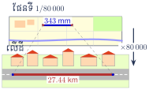
ចម្ងាយពិតនៅលើដីស្មើនឹងចម្ងាយលើផែនទីគុណនឹងភាគបែងមាត្រដ្ឋាន ៖
\[D = 343\text{ mm} \times 80\,000 = 27\,440\,000\text{ mm}\]ប្តូរទៅជាម៉ែត្រនិងគីឡូម៉ែត្រ ៖
\[27\,440\,000\text{ mm} = 27\,440\text{ m} = 27.44\text{ km}\]ដូច្ចោះ ចម្ងាយពិតនៅលើដីគឺ \(\displaystyle 27.44\text{ km}\) ។
ចម្ការដូងប្រេងមួយមានរាងត្រីកោណដែលមានជ្រុង \(\displaystyle 6\text{ km}\), \(\displaystyle 4.5\text{ km}\) និង \(\displaystyle 3.9\text{ km}\) ។ ចូរតាងចម្ការនោះលើផែនទីដែលមានមាត្រដ្ឋាន \(\displaystyle 1/75\,000\) ។
មើលដំណោះស្រាយ
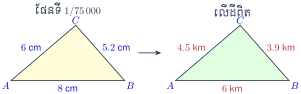
ប្តូរប្រវែងជ្រុងពិតទៅជាសង់ទីម៉ែត្រ ៖
- \(\displaystyle 6\text{ km} = 600\,000\text{ cm}\)
- \(\displaystyle 4.5\text{ km} = 450\,000\text{ cm}\)
- \(\displaystyle 3.9\text{ km} = 390\,000\text{ cm}\)
ប្រវែងនៅលើផែនទីដែលមានមាត្រដ្ឋាន \(\displaystyle \frac{1}{75\,000}\) ៖
- \(\displaystyle a = \frac{600\,000}{75\,000} = 8\text{ cm}\)
- \(\displaystyle b = \frac{450\,000}{75\,000} = 6\text{ cm}\)
- \(\displaystyle c = \frac{390\,000}{75\,000} = 5.2\text{ cm}\)
(សម្គាល់ ៖ សៀវភៅបោះពុម្ពមាត្រដ្ឋាន \(\displaystyle 1/750\) ប៉ុន្តែបើយកតាមនោះ ជ្រុង \(\displaystyle 6\text{ km}\) នឹងស្មើ \(\displaystyle 8\text{ m}\) លើក្រដាស ដែលមិនអាចទៅរួច ដូច្នេះជាកំហុសបោះពុម្ព ហើយគេយក \(\displaystyle 1/75\,000\) ដែលផ្តល់ \(\displaystyle 8\text{ cm}\), \(\displaystyle 6\text{ cm}\), \(\displaystyle 5.2\text{ cm}\) ។ បើគូសរូបត្រីកោណនេះ គេបានត្រីកោណដែលមានជ្រុង \(\displaystyle 8\), \(\displaystyle 6\), \(\displaystyle 5.2\) cm) ។
ផែនទីមួយមានមាត្រដ្ឋាន \(\displaystyle \frac{1}{2\,500}\) របស់ចម្ការចតុកោណកែងមួយដែលមានវិមាត្រ \(\displaystyle 4\text{ cm}\) និង \(\displaystyle 3.5\text{ cm}\) ។ បើគេលក់ចម្ការនោះក្នុងមួយអារថ្លៃ \(\displaystyle 10\,000\,000\text{ ៛}\) គណនាថ្លៃចម្ការនោះ ។
មើលដំណោះស្រាយ
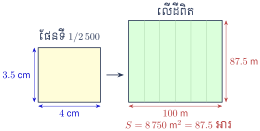
វិមាត្រពិតនៃចម្ការចតុកោណកែង ៖
- បណ្តោយពិត ៖ \(\displaystyle L = 4\text{ cm} \times 2\,500 = 10\,000\text{ cm} = 100\text{ m}\)
- ទទឹងពិត ៖ \(\displaystyle W = 3.5\text{ cm} \times 2\,500 = 8\,750\text{ cm} = 87.5\text{ m}\)
ផ្ទៃក្រឡាពិតនៃចម្ការ ៖
\[S = L \times W = 100\text{ m} \times 87.5\text{ m} = 8\,750\text{ m}^2\]ដោយ \(\displaystyle 1\text{ អារ (are)} = 100\text{ m}^2\) នោះផ្ទៃចម្ការជាអារគឺ ៖
\[S = \frac{8\,750}{100} = 87.5\text{ អារ}\]ថ្លៃលក់ចម្ការសរុប ៖
\[\text{ថ្លៃសរុប} = 87.5 \times 10\,000\,000\text{ ៛} = 875\,000\,000\text{ ៛}\]ដូច្ចោះ ចម្ការនោះមានតម្លៃ \(\displaystyle 875\,000\,000\text{ ៛}\) ។
នៅលើផែនទីភូមិបាលមួយមានមាត្រដ្ឋាន \(\displaystyle \frac{1}{2\,500}\) មានចម្ការមួយរាងចតុកោណកែងដែលមានបណ្តោយ \(\displaystyle 52\text{ mm}\) និងទទឹង \(\displaystyle 25\text{ mm}\) ។ រកប្រវែងវិមាត្រពិតនិងផ្ទៃក្រឡាចម្ការពិតជាហិកតា ។
មើលដំណោះស្រាយ
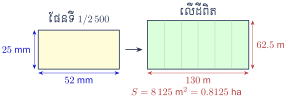
បណ្តោយពិត ៖
\[L = 52\text{ mm} \times 2\,500 = 130\,000\text{ mm} = 130\text{ m}\]ទទឹងពិត ៖
\[W = 25\text{ mm} \times 2\,500 = 62\,500\text{ mm} = 62.5\text{ m}\]ផ្ទៃក្រឡាពិតជាម៉ែត្រការេ ៖
\[S = L \times W = 130\text{ m} \times 62.5\text{ m} = 8\,125\text{ m}^2\]ប្តូរទៅជាហិកតា (\(\displaystyle 1\text{ ha} = 10\,000\text{ m}^2\)) ៖
\[S = \frac{8\,125}{10\,000} = 0.8125\text{ ហិកតា (ha)}\]
ដូច្ចោះ វិមាត្រពិតគឺ \(\displaystyle 130\text{ m}\) និង \(\displaystyle 62.5\text{ m}\) ហើយផ្ទៃក្រឡាគឺ \(\displaystyle 0.8125\text{ ha}\) ។
នៅលើផែនទីចម្ការដំឡូងមីមួយរាងចតុកោណកែងមានមាត្រដ្ឋាន \(\displaystyle \frac{1}{200\,000}\) ។ បើគេវាស់បណ្តោយនៅលើផែនទីមានប្រវែង \(\displaystyle 10.7\text{ dm}\) និងទទឹង \(\displaystyle 4.7\text{ dm}\) ។ តើប្រវែងពិតនៃវិមាត្រចម្ការនោះមានប្រវែងប៉ុន្មានម៉ែត្រ?
មើលដំណោះស្រាយ
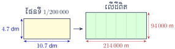
បណ្តោយពិត ៖
\[L = 10.7\text{ dm} \times 200\,000 = 2\,140\,000\text{ dm} = 214\,000\text{ m}\]ទទឹងពិត ៖
\[W = 4.7\text{ dm} \times 200\,000 = 940\,000\text{ dm} = 94\,000\text{ m}\]
ដូច្ចោះ ប្រវែងពិតនៃបណ្តោយគឺ \(\displaystyle 214\,000\text{ m}\) និងទទឹងគឺ \(\displaystyle 94\,000\text{ m}\) ។
នៅលើមាត្រដ្ឋាន \(\displaystyle 1/20\,000\) មានទីក្រុងបីដែលដៅចំណុច \(\displaystyle A\), \(\displaystyle B\) និង \(\displaystyle C\) ផ្តុំគ្នាជារាងត្រីកោណកែងត្រង់ \(\displaystyle A\) ដែលមានជ្រុង \(\displaystyle AB = 4.5\text{ cm}\) និង \(\displaystyle AC = 5.2\text{ cm}\) ។
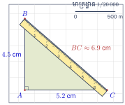
- ក. គូសរូបឱ្យបានត្រឹមត្រូវរួចវាស់ប្រវែង \(\displaystyle BC\) នៅលើផែនទី ។
- ខ. គណនាប្រវែងពិត \(\displaystyle AB\), \(\displaystyle AC\) និង \(\displaystyle BC\) នៅលើផ្ទៃដី ។
មើលដំណោះស្រាយ
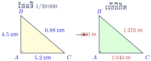
- ក.
តាមទ្រឹស្តីបទពីតាគ័រក្នុងត្រីកោណកែង \(\displaystyle ABC\) ត្រង់ \(\displaystyle A\) ៖
\[BC = \sqrt{AB^2 + AC^2} = \sqrt{4.5^2 + 5.2^2} = \sqrt{20.25 + 27.04} = \sqrt{47.29} \approx 6.88\text{ cm}\](បើវាស់ដោយបន្ទាត់ផ្ទាល់ ទទួលបានប្រហែល \(\displaystyle 6.9\text{ cm}\)) ។
- ខ.
គណនាប្រវែងពិតនៅលើផ្ទៃដី (មាត្រដ្ឋាន \(\displaystyle 1/20\,000\)) ៖
\[\begin{aligned} AB &= 4.5\text{ cm} \times 20\,000 = 90\,000\text{ cm} = 900\text{ m} = 0.9\text{ km} \\ AC &= 5.2\text{ cm} \times 20\,000 = 104\,000\text{ cm} = 1\,040\text{ m} = 1.04\text{ km} \\ BC &\approx 6.88\text{ cm} \times 20\,000 = 137\,600\text{ cm} = 1\,376\text{ m} = 1.376\text{ km} \end{aligned}\]
នៅលើផែនទីដែលមានមាត្រដ្ឋាន \(\displaystyle 1/80\,000\) ចម្ងាយរវាងខេត្តពីរមាន \(\displaystyle 66\text{ mm}\) ។ រកចម្ងាយពិតរវាងខេត្តទាំងពីរនៅលើផែនទីដែលមានមាត្រដ្ឋាន \(\displaystyle 1/200\,000\) និង \(\displaystyle 1/100\,000\) ។
មើលដំណោះស្រាយ
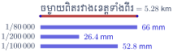
ចម្ងាយពិតរវាងខេត្តទាំងពីរ ៖
\[D = 66\text{ mm} \times 80\,000 = 5\,280\,000\text{ mm} = 5\,280\text{ m} = 5.28\text{ km}\]ចម្ងាយនៅលើផែនទីថ្មី ៖
ចំពោះមាត្រដ្ឋាន \(\displaystyle 1/200\,000\) ៖
\[d_1 = \frac{5\,280\,000\text{ mm}}{200\,000} = 26.4\text{ mm} = 2.64\text{ cm}\]ចំពោះមាត្រដ្ឋាន \(\displaystyle 1/100\,000\) ៖
\[d_2 = \frac{5\,280\,000\text{ mm}}{100\,000} = 52.8\text{ mm} = 5.28\text{ cm}\]
នៅក្នុងផែនទីមួយដែលមានមាត្រដ្ឋាន \(\displaystyle 1/1\,000\,000\) គេតាងកោះមួយក្នុងចតុកោណកែងដែលមានវិមាត្រ \(\displaystyle 15\text{ cm}\) និង \(\displaystyle 7\text{ cm}\) ។ គ្រូបានឱ្យសិស្សម្នាក់ចម្លងផែនទីនោះដាក់ក្នុងចតុកោណកែងមួយដែលមានទទឹងប្រវែង \(\displaystyle 9.3\text{ cm}\) ។
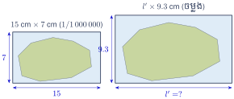
- ក. តើបណ្តោយមានប្រវែងប៉ុន្មាន cm ?
- ខ. រកមាត្រដ្ឋាននៃផែនទីនោះ ។
មើលដំណោះស្រាយ
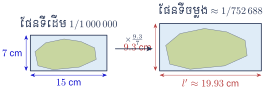
- ក.
ដោយសារចតុកោណកែងទាំងពីរមានរាងដូចគ្នា ផលធៀបវិមាត្រត្រូវគ្នាស្មើគ្នា ៖
\[\frac{l'}{15} = \frac{w'}{7} = \frac{9.3}{7} \implies l' = \frac{15 \times 9.3}{7} \approx 19.93\text{ cm}\] - ខ.
ទទឹងពិតនៃកោះ ៖
\[W = 7\text{ cm} \times 1\,000\,000 = 7\,000\,000\text{ cm}\]មាត្រដ្ឋាននៃផែនទីចម្លងថ្មី ៖
\[\text{មាត្រដ្ឋាន} = \frac{w'}{W} = \frac{9.3\text{ cm}}{7\,000\,000\text{ cm}} = \frac{1}{\frac{7\,000\,000}{9.3}} \approx \frac{1}{752\,688}\]
គូសត្រីកោណ \(\displaystyle ABC\) នៅក្នុងប្លង់មួយដែលមានមាត្រដ្ឋាន \(\displaystyle \frac{1}{15}\) ។ បើជ្រុងទាំងបីរបស់ត្រីកោណមានប្រវែង \(\displaystyle 5.1\text{ dm}\), \(\displaystyle 4.5\text{ dm}\) និង \(\displaystyle 3.6\text{ dm}\) ។
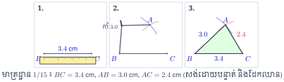
មើលដំណោះស្រាយ
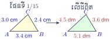
ប្តូរប្រវែងពិតទៅជាសង់ទីម៉ែត្រ ៖
- \(\displaystyle a = 5.1\text{ dm} = 51\text{ cm}\)
- \(\displaystyle b = 4.5\text{ dm} = 45\text{ cm}\)
- \(\displaystyle c = 3.6\text{ dm} = 36\text{ cm}\)
ប្រវែងជ្រុងត្រូវគូសនៅលើប្លង់ (មាត្រដ្ឋាន \(\displaystyle 1/15\)) ៖
- \(\displaystyle a' = \frac{51}{15} = 3.4\text{ cm}\)
- \(\displaystyle b' = \frac{45}{15} = 3.0\text{ cm}\)
- \(\displaystyle c' = \frac{36}{15} = 2.4\text{ cm}\)
របៀបគូស ៖
- គូសអង្កត់បាត \(\displaystyle BC = 3.4\text{ cm}\)
- ប្រើដែកឈានបើកកាំ \(\displaystyle 3.0\text{ cm}\) គូសធ្នូរង្វង់ពីចំណុច \(\displaystyle B\)
- ប្រើដែកឈានបើកកាំ \(\displaystyle 2.4\text{ cm}\) គូសធ្នូរង្វង់ពីចំណុច \(\displaystyle C\) កាត់ធ្នូទីមួយត្រង់ចំណុច \(\displaystyle A\)
- ភ្ជាប់ \(\displaystyle AB\) និង \(\displaystyle AC\) គេបានត្រីកោណ \(\displaystyle ABC\) តាមតម្រូវការ ។
ប្លង់បន្ទប់មួយមានមាត្រដ្ឋាន \(\displaystyle 1/200\) ដែលមានរាងដូចរូបខាងស្តាំ ។
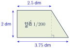
- ក. រកមាឌខ្យល់នៅក្នុងបន្ទប់បើវាមានកម្ពស់ \(\displaystyle 3.75\text{ m}\) ។
- ខ. រកប្រាក់ដែលគេត្រូវទិញឥដ្ឋការ៉ូ បើគេក្រាលឥដ្ឋការ៉ូក្នុង \(\displaystyle 1\text{ m}^2\) មានតម្លៃ \(\displaystyle 1\,600\text{ ៛}\) ។
មើលដំណោះស្រាយ
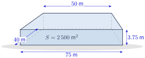
តាមរូប ប្លង់បន្ទប់មានរាងជាចតុកោណព្នាយកែង ដែលមានជ្រុងស្របគ្នា \(\displaystyle 2.5\text{ dm}\) និង \(\displaystyle 3.75\text{ dm}\) ហើយកម្ពស់ \(\displaystyle 2\text{ dm}\) ។ (សៀវភៅឱ្យតែ \(\displaystyle 2.5\text{ dm}\) និង \(\displaystyle 2\text{ dm}\) ចំណែកបាតធំគេវាស់ពីរូបបាន \(\displaystyle \approx 3.75\text{ dm}\) ។)
វិមាត្រពិតនៅលើផ្ទៃដី (គុណនឹង \(\displaystyle 200\)) ៖- បាតតូចពិត ៖ \(\displaystyle 2.5\text{ dm} \times 200 = 500\text{ dm} = 50\text{ m}\)
- កម្ពស់ពិត ៖ \(\displaystyle 2\text{ dm} \times 200 = 400\text{ dm} = 40\text{ m}\)
- បាតធំពិត ៖ \(\displaystyle 3.75\text{ dm} \times 200 = 750\text{ dm} = 75\text{ m}\)
ផ្ទៃក្រឡាបាតបន្ទប់ពិត ៖
\[S = \frac{50 + 75}{2} \times 40 = 62.5 \times 40 = 2\,500\text{ m}^2\]- ក.
មាឌខ្យល់នៅក្នុងបន្ទប់ (កម្ពស់ \(\displaystyle H = 3.75\text{ m}\)) ៖
\[V = S \times H = 2\,500 \times 3.75 = 9\,375\text{ m}^3\] - ខ.
ប្រាក់ទិញឥដ្ឋការ៉ូ (\(\displaystyle 1\,600\text{ ៛}\) ក្នុង \(\displaystyle 1\text{ m}^2\)) ៖
\[2\,500 \times 1\,600 = 4\,000\,000\text{ ៛}\]
ដូច្នេះ មាឌខ្យល់គឺ \(\displaystyle 9\,375\text{ m}^3\) និងប្រាក់ទិញឥដ្ឋការ៉ូគឺ \(\displaystyle 4\,000\,000\text{ ៛}\) ។
វាស់ជ្រុងទាំងអស់និងមុំទាំងអស់នៃរូបទាំងពីរខាងក្រោម រួចសរសេរលទ្ធផលដែលបានពីការវាស់ទាំងនេះដាក់ក្នុងតារាងមួយ បន្ទាប់មកគណនាផលធៀបនៃជ្រុងត្រូវគ្នា ។ តើរូបទាំងពីរនេះដូចគ្នាដែរឬទេ ?
មើលដំណោះស្រាយ
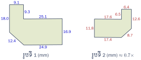
រូបទីពីរជារូបទីមួយដែលត្រូវបានបង្រួម ហើយត្រឡប់ (ឆ្លុះ) ដូច្នេះចំណុចត្រូវគ្នាគឺ ៖ \(\displaystyle A \leftrightarrow N\), \(\displaystyle B \leftrightarrow M\), \(\displaystyle C \leftrightarrow L\), \(\displaystyle D \leftrightarrow K\), \(\displaystyle E \leftrightarrow J\), \(\displaystyle F \leftrightarrow I\), \(\displaystyle G \leftrightarrow H\) ។
រង្វាស់មុំ ៖ មុំត្រូវគ្នាស្មើគ្នា ៖ \(\displaystyle \angle A = \angle B = \angle D = \angle E = 90^\circ\), \(\displaystyle \angle C = 270^\circ\) (មុំចូល), \(\displaystyle \angle F = \angle G \approx 135^\circ\) ។ មុំទាំងនេះក្នុងរូបទីពីរ (\(\displaystyle N, M, K, J\) ជា \(\displaystyle 90^\circ\), \(\displaystyle L\) ជា \(\displaystyle 270^\circ\), \(\displaystyle I, H \approx 135^\circ\)) ក៏ដូចគ្នា ។
រង្វាស់ជ្រុង (mm) និងផលធៀប ៖
ជ្រុងរូបទី 1 ប្រវែង ជ្រុងត្រូវគ្នារូបទី 2 ប្រវែង \(\displaystyle AB\) \(\displaystyle 9.1\) \(\displaystyle NM\) \(\displaystyle 6.4\) \(\displaystyle BC\) \(\displaystyle 9.3\) \(\displaystyle ML\) \(\displaystyle 6.5\) \(\displaystyle CD\) \(\displaystyle 25.1\) \(\displaystyle LK\) \(\displaystyle 17.6\) \(\displaystyle DE\) \(\displaystyle 16.9\) \(\displaystyle KJ\) \(\displaystyle 11.8\) \(\displaystyle EF\) \(\displaystyle 24.9\) \(\displaystyle JI\) \(\displaystyle 17.4\) \(\displaystyle FG\) \(\displaystyle 12.4\) \(\displaystyle IH\) \(\displaystyle 8.7\) \(\displaystyle GA\) \(\displaystyle 18.0\) \(\displaystyle HN\) \(\displaystyle 12.6\) ផលធៀបជ្រុងត្រូវគ្នា ៖
\[\frac{NM}{AB} = \frac{ML}{BC} = \frac{LK}{CD} = \frac{KJ}{DE} = \frac{JI}{EF} = \frac{IH}{FG} = \frac{HN}{GA} \approx 0.7\]សន្និដ្ឋាន ៖ រូបទាំងពីរដូចគ្នា ព្រោះមុំត្រូវគ្នាស្មើគ្នា និងជ្រុងត្រូវគ្នាមានផលធៀបថេរ \(\displaystyle 0.7\) (រូបទីពីរជារូបទីមួយតូចជាងវា \(\displaystyle 0.7\) ដង) ។
ចម្ងាយរវាងទីក្រុងពីរមានចម្ងាយពិត \(\displaystyle 310\text{ km}\) ។ តើចម្ងាយនេះតាងឱ្យប្រវែងប៉ុន្មាននៅលើផែនទី បើគេយកមាត្រដ្ឋានដូចខាងក្រោម ៖
- ក. \(\displaystyle \frac{1}{50\,000}\)
- ខ. \(\displaystyle \frac{1}{80\,000}\)
- គ. \(\displaystyle \frac{1}{20\,000}\)
- ឃ. \(\displaystyle \frac{1}{100\,000}\)
- ង. តើគេសម្រេចជ្រើសរើសមាត្រដ្ឋានមួយណា ដើម្បីគូសផែនទីផ្លូវថ្នល់ឱ្យមានវិមាត្រសមរម្យ ។
មើលដំណោះស្រាយ
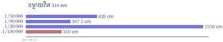
ចម្ងាយពិត \(\displaystyle D = 310\text{ km} = 310\,000\text{ m} = 31\,000\,000\text{ cm}\) ៖
- ក.
ចំពោះមាត្រដ្ឋាន \(\displaystyle \frac{1}{50\,000}\) ៖
\[d = \frac{31\,000\,000\text{ cm}}{50\,000} = 620\text{ cm} = 6.2\text{ m}\] - ខ.
ចំពោះមាត្រដ្ឋាន \(\displaystyle \frac{1}{80\,000}\) ៖
\[d = \frac{31\,000\,000\text{ cm}}{80\,000} = 387.5\text{ cm} = 3.875\text{ m}\] - គ.
ចំពោះមាត្រដ្ឋាន \(\displaystyle \frac{1}{20\,000}\) ៖
\[d = \frac{31\,000\,000\text{ cm}}{20\,000} = 1550\text{ cm} = 15.5\text{ m}\] - ឃ.
ចំពោះមាត្រដ្ឋាន \(\displaystyle \frac{1}{100\,000}\) ៖
\[d = \frac{31\,000\,000\text{ cm}}{100\,000} = 310\text{ cm} = 3.1\text{ m}\] - ង. ជម្រើសមាត្រដ្ឋាន ៖ ក្នុងចំណោមមាត្រដ្ឋានទាំងបួនខាងលើ មាត្រដ្ឋាន \(\displaystyle \frac{1}{100\,000}\) ផ្តល់នូវប្រវែង \(\displaystyle 3.1\text{ m}\) ដែលតូចល្មម និងងាយស្រួលគូសជាងគេសម្រាប់ផ្ទាំងផែនទីផ្លូវថ្នល់ខ្នាតធំ ។ (សម្រាប់ផែនទីសៀវភៅធម្មតា គេនិយមប្រើមាត្រដ្ឋាន \(\displaystyle 1/1\,000\,000\) ដែលផ្តល់ប្រវែង \(\displaystyle 31\text{ cm}\)) ។
ខ្លឹមសារ៖ សៀវភៅពុម្ពគណិតវិទ្យាថ្នាក់ទី៨ របស់ក្រសួងអប់រំ យុវជន និងកីឡា · វាយអត្ថបទ គូររូបភាពឡើងវិញ និងរៀបចំលើអនឡាញដោយលោកគ្រូ សាន សុខលី សម្រាប់ការសិក្សាដោយឥតគិតថ្លៃ និងមិនរកប្រាក់ចំណេញ។ មិនមែនជាការបោះពុម្ពផ្លូវការរបស់ក្រសួងទេ។